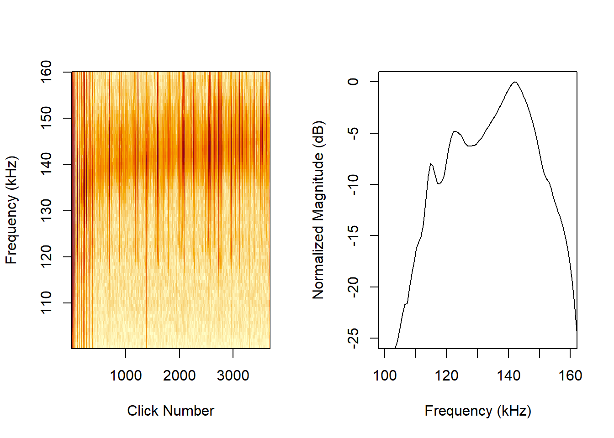

| detections | events | |
|---|---|---|
| Kogia | 190 | 15 |
| Dall’s porpoise | 122 | 15 |
| harbor porpoise | 3682 | 48 |
NBHF Classes
NBHF Classes
Results
I can add some general remarks here about broad differences in Figure 1 the shapes of the different profiles and what features led us to select them as high-quality clicks. Kogia in Figure 1 (a), Dall’s in Figure 1 (b), and harbor in Figure 1 (c).

Table of summary statistics
| Kogia spp. | Dall’s porpoise | harbor porpoise | |
|---|---|---|---|
| BW_10dB | 14.72 (4.27) 14.44 (3.8 - 46.45) |
10.08 (7.37) 7.02 (2.28 - 39.38) |
12.57 (4.74) 12.81 (1.2 - 42.13) |
| BW_3dB | 5.82 (2.81) 6.17 (0.32 - 19.41) |
4.54 (3.48) 3.65 (0.63 - 20.11) |
4.73 (2.8) 4.43 (0.24 - 18.2) |
| Q_10dB | 8.9 (2.76) 8.4 (2.45 - 28.01) |
18.82 (9.96) 18.98 (3.35 - 59.35) |
14.09 (10.18) 11.04 (2.66 - 100.41) |
| Q_3dB | 29.91 (29.4) 19.78 (7.58 - 332.43) |
44.37 (30.2) 36.44 (6.27 - 178.17) |
45.41 (36.75) 31.66 (6.7 - 613.27) |
| centerkHz_10dB | 123.01 (5.38) 123.49 (105.31 - 145.81) |
132.69 (6.34) 133.77 (112.07 - 149.08) |
141.27 (4.6) 142.15 (104.36 - 158.12) |
| centerkHz_3dB | 122.09 (6.23) 122.3 (104.08 - 146.12) |
132.29 (6.5) 133.71 (112.14 - 148.06) |
140.58 (4.66) 141.54 (104.03 - 157.89) |
| duration | 113.77 (158.7) 80.81 (7.82 - 1467.67) |
416.01 (675.41) 148.59 (2.61 - 2486.97) |
273.33 (478.78) 83.42 (2.61 - 2494.79) |
| fmax_10dB | 130.37 (6.14) 130.13 (109.98 - 160.08) |
137.73 (6.29) 137.14 (113.91 - 156.44) |
147.56 (5.02) 148.3 (107.14 - 162.27) |
| fmax_3dB | 125 (6.78) 124.96 (106.02 - 155.83) |
134.56 (6.48) 135.59 (112.45 - 150.85) |
142.95 (4.89) 143.9 (104.98 - 160.1) |
| fmin_10dB | 115.65 (5.42) 117.05 (96.84 - 134.17) |
127.65 (8.24) 130.4 (104.2 - 143.66) |
134.98 (5.33) 136.12 (97.35 - 154.51) |
| fmin_3dB | 119.18 (5.97) 119.94 (99.88 - 140.77) |
130.02 (6.97) 131.86 (111.23 - 145.26) |
138.21 (4.84) 139.1 (103.08 - 155.68) |
| peak | 121.95 (6.6) 122.2 (103.2 - 148.4) |
132.24 (6.53) 133.6 (111.6 - 148) |
140.46 (4.72) 141.6 (104 - 157.2) |
| peakTime | 0.01 (0) 0.01 (0.01 - 0.02) |
0.01 (0) 0.01 (0.01 - 0.02) |
0.01 (0) 0.01 (0 - 0.02) |
Discussion points
This is important for those who are interested in seeing the exact profiles of these types of signals and could be helpful for people studying NBHF clicks in other regions, to compare to what we consider to be a high-quality click.